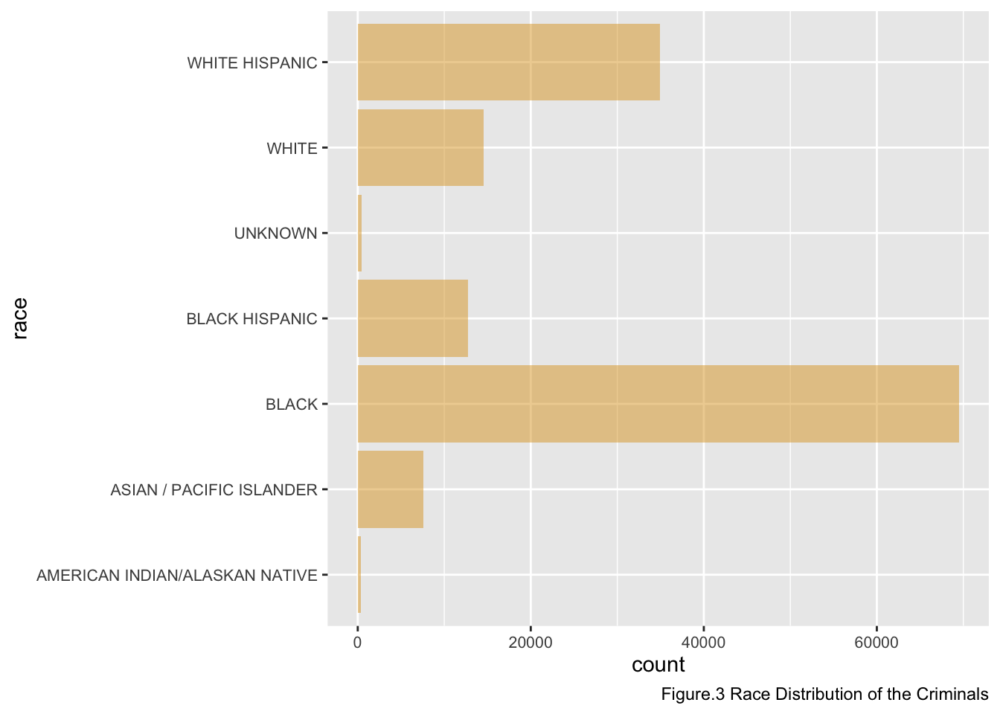
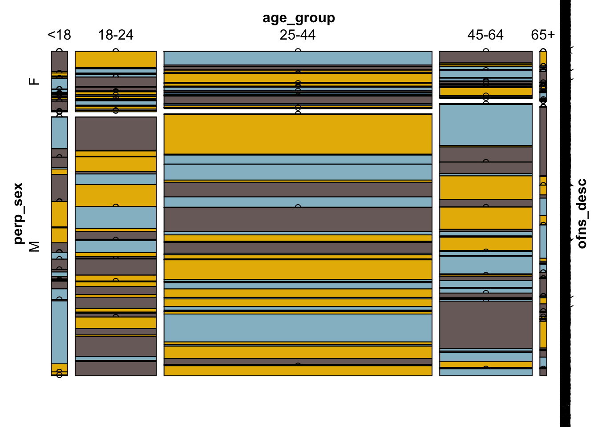
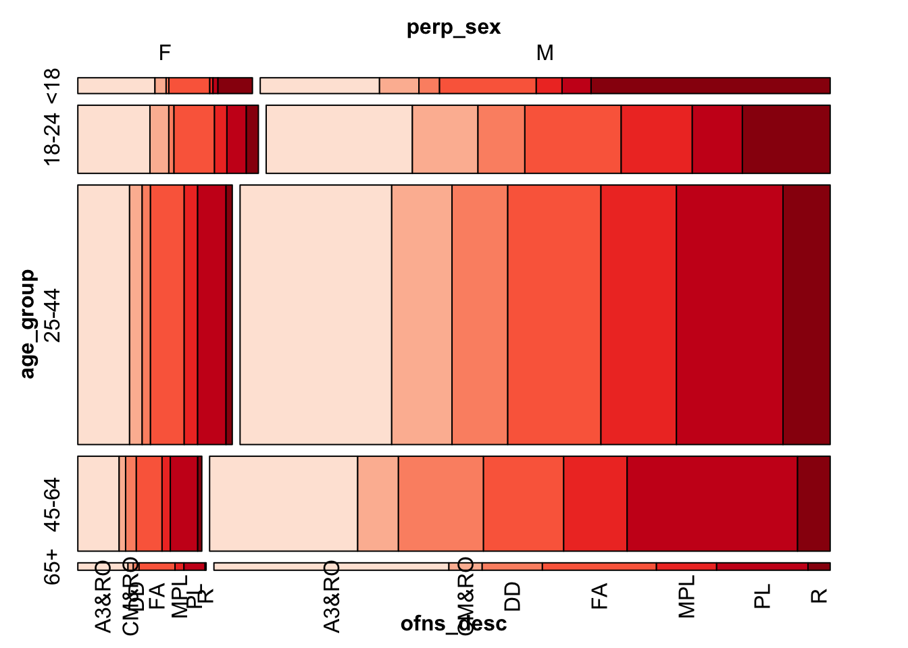
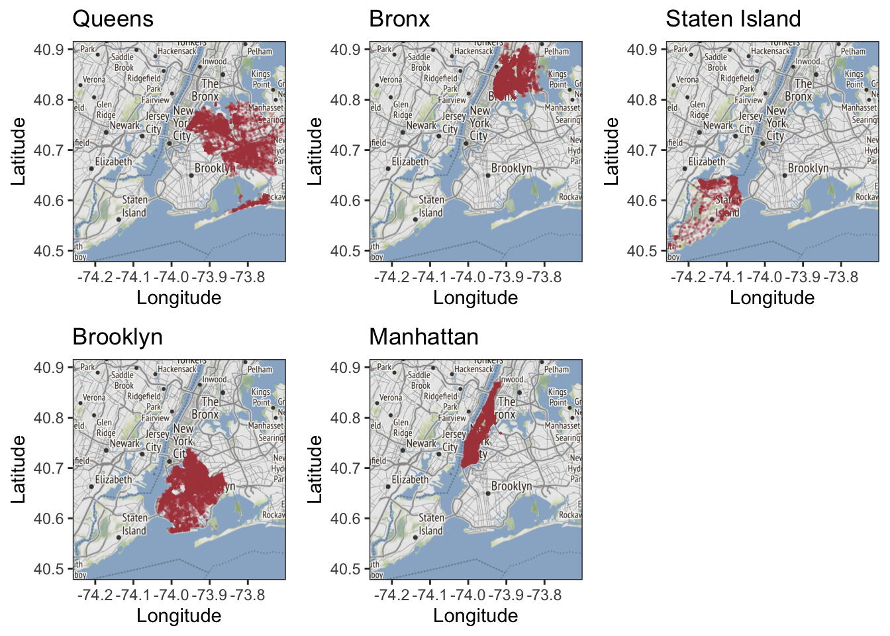
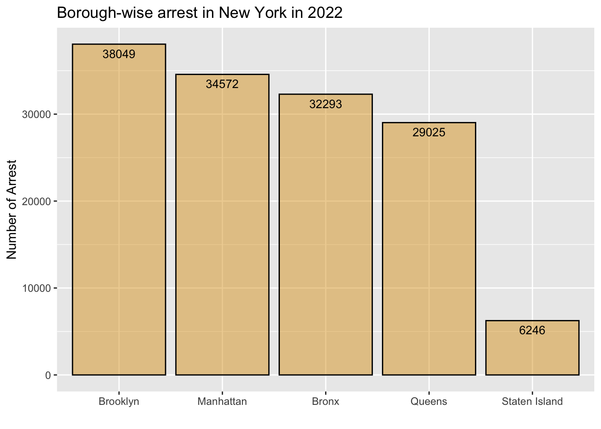
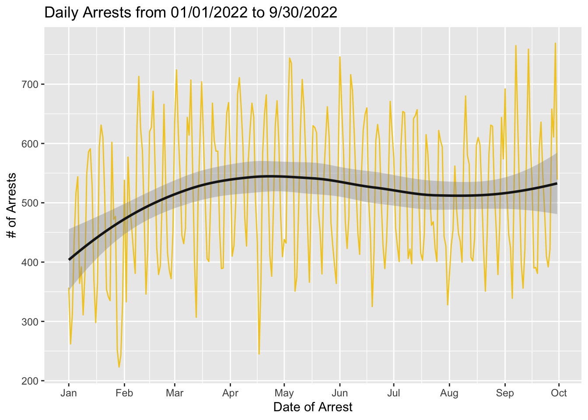
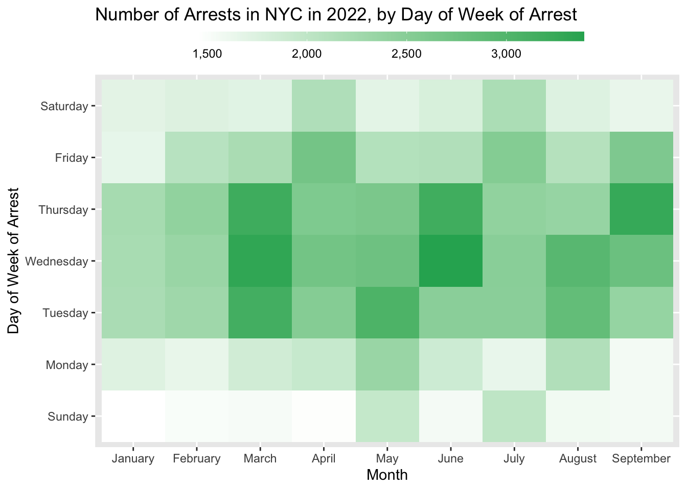
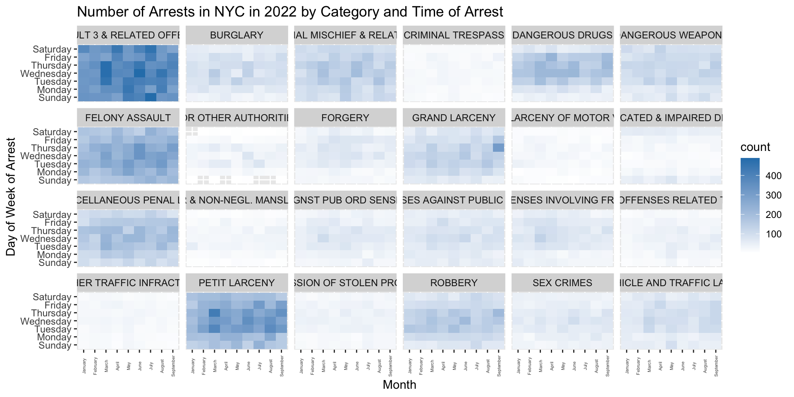

Chapter 4 Results
4.1 Criminals’ portrait
We start to analyze the crime pattern with plotting the criminals’ portrait.
With the arrest records, we plot the basic information namely age, gender and race for all perpetrators by histograms.


From the above three figures, we can observe the following characteristics of the captured criminals. First, the number of male perpetrators are highly greater than the number of female perpetrators. Even though the age group, as we mentioned in section 3.2 cleaning and transformation, is not evenly classified, the histogram of the distribution of age among perpetrators shows that the age of perpetrators is mainly concentrated in 25-44 years old. Beside, it is worth to notice that there are a remarkable amount of perpetrators only in their 18-24 years old. In addition, regarding the race distribution of perpetrators, the Black group and White Hispanic group are the two major group of perpetrators. These data and observations are useful to understand the demographics and biometrics of perpetrators, and potentially helpful for NYPD and related researches on crimes in NYC.
4.1.1 Relationship between sex, race and age

From the mosaic plot above, we can see the age, gender, and race distribution of arrested people. Overall, males are the vast majority of all arrests. For age, the arrest rate of 25-44 is the highest among all age groups, followed by 18-24 and 45-60. With the weakening of activity, the arrest rate also decreases. For race, black and white Hispanics are the two main arrest groups, and the least arrested races are American Indian and Alaskan natives, which are categorized into “Others”. Also, there is no strong pattern among age, race, and gender.
So there is another question: What is the connection between these criminals’ figures and the specific types of crime correspondingly?
4.2 Crime Types
First, we calculate the frequency of all crime types as shown in table below.
## Category Frequency Percentage
## 1 ASSAULT 3 & RELATED OFFENSES 23188 16.5409993937
## 2 PETIT LARCENY 15288 10.9055890431
## 3 FELONY ASSAULT 14190 10.1223383386
## 4 MISCELLANEOUS PENAL LAW 9327 6.6533509291
## 5 CRIMINAL MISCHIEF & RELATED OF 7717 5.5048685665
## 6 DANGEROUS DRUGS 7686 5.4827549310
## 7 ROBBERY 7310 5.2145379320
## 8 GRAND LARCENY 6432 4.5882227057
## 9 DANGEROUS WEAPONS 6011 4.2879052680
## 10 BURGLARY 4731 3.3748261226
## 11 VEHICLE AND TRAFFIC LAWS 4668 3.3298855084
## 12 OFFENSES AGAINST PUBLIC ADMINI 4203 2.9981809751
## 13 OFFENSES INVOLVING FRAUD 3627 2.5872953597
## 14 SEX CRIMES 3192 2.2769911189
## 15 OFF. AGNST PUB ORD SENSBLTY & 2938 2.0958019760
## 16 FORGERY 2795 1.9937939152
## 17 POSSESSION OF STOLEN PROPERTY 1869 1.3332382209
## 18 INTOXICATED & IMPAIRED DRIVING 1813 1.2932910083
## 19 OTHER OFFENSES RELATED TO THEF 1804 1.2868709206
## 20 FOR OTHER AUTHORITIES 1362 0.9715732782
## 21 MURDER & NON-NEGL. MANSLAUGHTE 1242 0.8859721083
## 22 OTHER TRAFFIC INFRACTION 1238 0.8831187360
## 23 CRIMINAL TRESPASS 1177 0.8396048079
## 24 GRAND LARCENY OF MOTOR VEHICLE 992 0.7076363377
## 25 OFFENSES AGAINST THE PERSON 755 0.5385740272
## 26 RAPE 569 0.4058922139
## 27 NYS LAWS-UNCLASSIFIED FELONY 515 0.3673716874
## 28 BURGLAR'S TOOLS 446 0.3181510147
## 29 UNAUTHORIZED USE OF A VEHICLE 360 0.2568035096
## 30 OTHER STATE LAWS 340 0.2425366480
## 31 FRAUDS 332 0.2368299033
## 32 INTOXICATED/IMPAIRED DRIVING 270 0.1926026322
## 33 OTHER STATE LAWS (NON PENAL LA 269 0.1918892892
## 34 GAMBLING 219 0.1562221350
## 35 THEFT OF SERVICES 146 0.1041480900
## 36 THEFT-FRAUD 135 0.0963013161
## 37 PROSTITUTION & RELATED OFFENSES 128 0.0913079145
## 38 ALCOHOLIC BEVERAGE CONTROL LAW 116 0.0827477976
## 39 ARSON 104 0.0741876806
## 40 ADMINISTRATIVE CODE 96 0.0684809359
## 41 CANNABIS RELATED OFFENSES 89 0.0634875343
## 42 KIDNAPPING & RELATED OFFENSES 78 0.0556407604
## 43 AGRICULTURE & MRKTS LAW-UNCLASSIFIED 57 0.0406605557
## 44 OFFENSES AGAINST PUBLIC SAFETY 55 0.0392338695
## 45 HARRASSMENT 2 54 0.0385205264
## 46 ENDAN WELFARE INCOMP 37 0.0263936940
## 47 MOVING INFRACTIONS 35 0.0249670079
## 48 FRAUDULENT ACCOSTING 33 0.0235403217
## 49 DISORDERLY CONDUCT 27 0.0192602632
## 50 HOMICIDE-NEGLIGENT,UNCLASSIFIE 25 0.0178335771
## 51 CHILD ABANDONMENT/NON SUPPORT 23 0.0164068909
## 52 ANTICIPATORY OFFENSES 17 0.0121268324
## 53 KIDNAPPING 9 0.0064200877
## 54 HOMICIDE-NEGLIGENT-VEHICLE 8 0.0057067447
## 55 JOSTLING 8 0.0057067447
## 56 OTHER STATE LAWS (NON PENAL LAW) 8 0.0057067447
## 57 OFFENSES RELATED TO CHILDREN 6 0.0042800585
## 58 LOITERING/GAMBLING (CARDS, DIC 5 0.0035667154
## 59 ESCAPE 3 4 0.0028533723
## 60 NEW YORK CITY HEALTH CODE 2 0.0014266862
## 61 PARKING OFFENSES 2 0.0014266862
## 62 ADMINISTRATIVE CODES 1 0.0007133431
## 63 DISRUPTION OF A RELIGIOUS SERV 1 0.0007133431
## 64 UNLAWFUL POSS. WEAP. ON SCHOOL 1 0.0007133431We can see that there are 64 types of crimes in total. To have a clear and better understanding of the dataset, we select seven types of crimes which percentage is higher than 5% among the total observations for the further analysis. Then we can have a more explicit and concise plot to present the dataset. Otherwise, there would be a lot of chunks of data which is not very critical or meaningful on the plots.
They are [ASSAULT 3 & RELATED OFFENSES, PETIT LARCENY, FELONY ASSAULT, MISCELLANEOUS PENAL LAW, CRIMINAL MISCHIEF & RELATED OF, DANGEROUS DRUGS, ROBBERY].

Here we made an mosaic diagram to show the relationship between the criminals and the crime types.

## NULLHere we can see that the distribution of different crime types is similar in different age groups and sex offenders. No pattern is observed from the mosaic graph. So there is no a strong assocation between the types of crime and the types of offenders.
Based on the analysis above, we can infer that there is a certain randomness between the crime rate and crime types. Therefore, the next question would be: are there any factors that are more strongly associated with crime rate in New York?
4.3 Spacial Analysis
As we know, neighborhoods in New York are highly different among each other. Specifically, different regions in New York have highly various environments, house pricing, policing environments, different police forces, different people who live there.
In this section, we look at the distribution of the number of arrests on map.
From the figure above, we can observe that arrests which happened in Manhattan, Bronx and Brooklyn are relatively concentrated.In other words, in general, the crimes are possibly happened in any area in Manhattan, Bronx and Brooklyn. We could not say there is a certain region much safer than others in Manhattan, Bronx and Brooklyn. On Queens and Staten Island, the graphs indicate that there are some places that never have an arrest during the this current year.

By the bar plot of the number of arrests based on the borough of NYC, it turns out that the number of arrests occurred in Staten Island is the least consistent with the observation from the map graphs, which is about 1/3 of that in other borough.

This bar plot compares the number of various types of arrests based on the different boroughs of NYC. It is worth to notice that the number of Petit Larceny is relatively high in Manhattan compared to other types of crimes in NYC and the number of Petit Larceny in other boroughs. In general, there is no strong pattern between the types of crimes and the boroughs of the crimes, which are evenly distributed with proportions to their total number of crimes in boroughs.
4.4 Temporal Analysis
We want to explore if there is any monthly or seasonal pattern over time by plotting the number of arrest over time. If crime is tied to activities, the period at which activities end may impact.

This figure shows the number of daily arrests from January 1 2022, to September 30 2022. We can see there is no strong pattern over time. Nevertheless, there is a small increasing during the beginning of 2022 and a slight decreasing around July and August. Paying attention to January 1, 2022, which is the New Year, we can’t conclude that the number of arrests happened on January 1 is higher. The graph shows that the number of crimes is not strongly related to the activities and time.
Then we will try to examine if the number of arrests has association with the day of week. We first need to derive the day of week based on the date. Also with subgroups, we can verify if there is a latent factor.

By plotting the heatmap of the number of arrests in NYC over time categorized by the day of week, we can notice a pattern that there are more arrests during the weekday than during weekends, specifically on Tuesday, Wednesday and Thursday. Moreover, from the graph, we can see that in January and February, overall there are fewer arrests in NYC compared to other months.
We also want to examine if certain types of crime may be more time dependent. For example, more traffic violations when people leave work.

We can see there is no strong relation among the day of week and the type of crimes, which is consistent with the general pattern. That is there are more arrests during the weekdays in general. For the crime type with the highest frequency, assault and related offenses are not time dependent and there is no certain pattern.